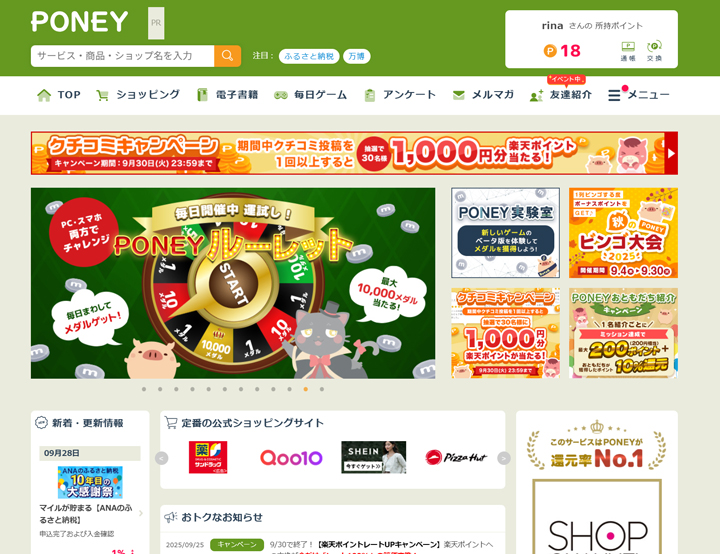

アートディレクション業務を担い、提供企業向けのブラウザ・アプリゲーム制作に幅広く携わりました。
主な提供企業は、楽天（楽天ポイントモール）、Vポイントモール、Ponta（Ponta PLAY）などです。
アプリの「Vポイントすいぞくかん」では、ASO対策に基づくスクリーンショット作成、キーワード・テキスト改善、ゲーム内UI/UXデザイン改善、背景作成を担当しました。
また、ブラウザゲーム「ふるふるパニック」「もぐらたたき」では、他社への提供（横展開）に向けてトンマナを意識したデザイン調整、提供先企業のキャラクターに合わせた追加キャラクター制作も行いました。
アプリ・ブラウザゲーム共に、広告需要月（3の倍数月）にはキャンペーンを実施し、各提供先メディア用のゲーム画面キャンペーンデザインや露出バナー作成も担当しました。
提供先・URL
・楽天ポイントモール：https://pointmall.rakuten.co.jp/
・Vポイントモール：https://www.vpoint.jp/
・Ponta PLAY：https://www.ponta.jp/play/
担当
・アートディレクション全般（進行管理・他部署・提供先調整）
・キャラクターデザイン（自社および提供先企業向け）
・ゲーム内UI/UXデザイン改善
・背景デザイン作成
・ブラウザゲームのトンマナ調整・追加キャラクター制作
・キャンペーンデザイン（ゲーム内画面、バナー制作）
・広告用露出バナー作成
・アプリASO対策（スクリーンショット作成、キーワード・テキスト改善）
・他システムとのデータ連携対応
・データ分析による改善提案（ユーザー行動解析、KPI向上施策）
工夫した点
・提供企業ごとのブランド・キャラクターに合わせたトンマナ調整
・ゲーム内UI/UX改善で直感的操作とユーザー継続率向上を実現
・キャンペーンとバナーを連動させ、広告需要月に最大限の集客効果を発揮
・アプリASO対策でストア露出・ダウンロード率向上
・データ分析を活用したPDCAサイクルを実施し、継続的改善を推進
・ブラウザゲームの横展開に対応する汎用デザイン制作
「Vポイントすいぞくかん」アプリのASO対策/ゲーム内背景画像の作成/新コンテンツのデザイン作成
ユーザーがサービスの魅力を直感的に理解できるよう、「App Store」「Google Play」に掲載するスクリーンショットやテキストを改善しました。
訴求内容を整理し、余白や視線の流れを意識したレイアウトにすることで、見せたい情報が自然に目に入るデザインに仕上げています。
ゲーム内では既存の背景に加え、ステージを進行するごとに切り替わる複数の背景を新規で制作。
プレイヤーが水槽の外から寒帯・淡水などさまざまな水槽を巡って鑑賞しているような世界観を表現し、プレイの継続性や没入感を高めました。
また、新コンテンツ「デイリーパズルボーナス」では、10種類のキャラクターを用いたスタンプを作成。
毎日スタンプを押すのが楽しみになるようなデザインに加え、獲得できるボーナスアイテムは視認性を高めるため大きめに配置し、報酬が一目でわかるデザインにすることで、プレイヤーの継続意欲向上につなげました。
【App Store スクリーンショット】 
【ゲーム内背景画像の作成】
【新コンテンツのデザイン作成】 新コンテンツはデザインカンプ作成および反映用パーツ作成までを担当。
ブラウザゲーム「もぐらたたき（ポンタの宇宙大戦争）」デザイン調整
Ponta PLAYに導入されている「ポンタの宇宙大戦争」のミニゲームのデフォルトデザインを、宇宙をテーマにした世界観に合わせて大幅に調整。
「ポンUFOキャッチャー」としてデザインを制作し、ゲーム内での見た目と操作性の両立を意識。
アニメーションイメージや操作フローは関係者と共有し、円滑な実装をサポートしました。
併せて「さがすモード」のデフォルトデザインも調整し、Ponta Worldの世界観を尊重しながら、画面切り替えごとに多彩な背景を制作しました。
【もぐらたたき（ポンタの宇宙大戦争）：ミニゲーム「ポンUFOキャッチャー」デザイン作成】
URL: https://ponta.wamgame.jp/luck/top

ブラウザゲーム「ふるふるパニック（ふるふるサファリ）」キャラクターデザイン
GMOポイ活サイト向けに提供する「ふるふるパニック」の新規キャラクター制作などを担当しました。
提供先企業の既存キャラクター「ポノスケ（虎のキャラクター）」に加え、新規の追加キャラクターとして「ハイエナ」「シマウマ」を同じテイストでデザイン。
ゲームの世界観を損なわずにキャラクターを拡張し、GMOポイ活運営チームからも好評をいただきました。
ゲーム内での見た目や操作性とのバランスも意識し、完成度の高いキャラクターデザインを実現しました。
【ふるふるパニック（ふるふるサファリ）「ハイエナ」「シマウマ」】